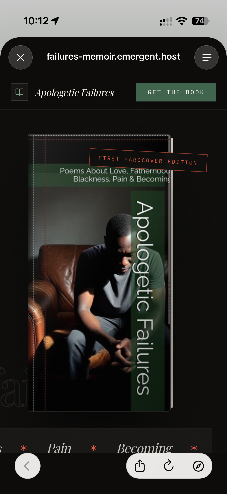

Some apologies are spoken. Others have to be written from the places where silence has lived for years.
Apologetic Failures explores fatherhood, regret, love, accountability, and the generational wounds we carry long before we understand their names.
An apology written from the uncomfortable space between love and accountability.
A meditation on time, absence, and the moments we wish we could have back.
An exploration of thought, identity, pressure, and survival.
What happens when love begins transforming the person you promised yourself you would remain?
Wrestling with choices, consequences, and the silence that follows them.
Childhood, identity, inheritance, and the things children learn without being taught.
The desperate search for language when feelings become too large for ordinary speech.
Sometimes healing begins with swallowing the truth.
Finding beauty where pain once convinced us there was none.
Love, loss, memory, and the impermanence of human connection.
When another person becomes the breath that awakens something long asleep.
Edwin Wilson